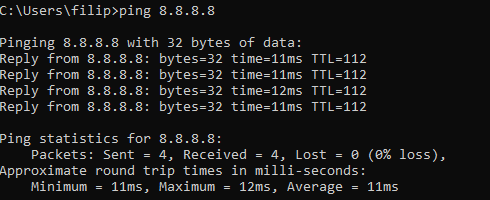
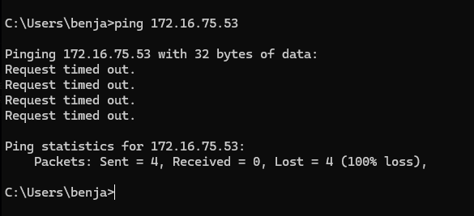
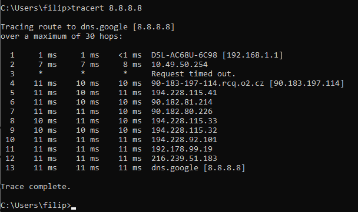
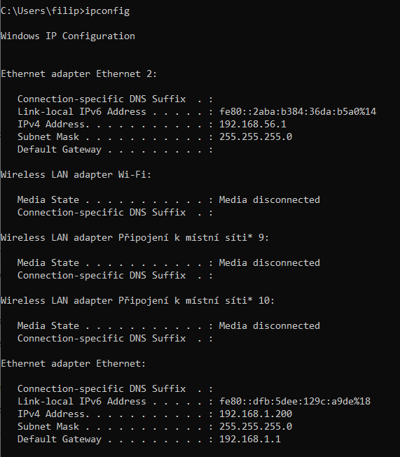

Co znamená tento výstup?
Z výpisu příkazu urči problém v síti.
Středně těžká úloha
Při diagnostice sítě používáme příkazy, jejichž výstup nám napoví, kde je problém. Z výpisu lze poznat, zda je zařízení dostupné, zda máme správnou IP adresu nebo kudy pakety putují.
Ping
ping adresa — ověřuje dostupnost cíle (odešle ICMP pakety).
Reply from … = cíl odpovídá, spojení funguje. Request timed out = odpověď nepřišla (cíl vypnutý, firewall, nebo problém na cestě).
Destination host unreachable = router neví, jak se k cíli dostat.
Na konci ping zobrazí statistiku: kolik paketů bylo odesláno, kolik doručeno, případně ztrátu (loss) v procentech — např. „Lost = 1 (25% loss)“ znamená nestabilní spojení.
ping -n 4 (Windows) / ping -c 4 (Linux) — počet odeslaných paketů (např. 4).
ping -t (Windows) — ping běží donekonečna, ukončení Ctrl+C.
Ipconfig (Windows)
ipconfig — zobrazí IP adresu, masku, výchozí bránu (gateway) a DNS pro každé rozhraní.
ipconfig /all — podrobný výpis včetně MAC adresy, DHCP, časů zapůjčení.
ipconfig /release — odešle IP adresu zpět DHCP serveru.
ipconfig /renew — požádá DHCP o nové přidělení IP (vhodné po /release nebo při problémech s připojením).
Ifconfig a ip (Linux)
ifconfig — zobrazení a základní nastavení rozhraní (IP, maska). Na novějších systémech se často používá ip.
ip addr (nebo ip a) — zobrazí adresy všech rozhraní.
ip route — zobrazí výchozí bránu a směrovací tabulku.
Traceroute
tracert (Windows) / traceroute nebo mtr (Linux) — zobrazí cestu k cíli (seznam routerů, hopů). Používá se k zjištění, kde na trase dochází k ztrátě nebo velkému zpoždění.
Další základní příkazy
nslookup domena — ověří, na jakou IP adresu se překládá doménové jméno (DNS).
getmac (Windows) — zobrazí MAC adresy síťových adaptérů.
Podívej se na výstup příkazu ping na obrázcích a vyber, co daný výstup znamená.

Co znamená výstup na obrázku?

Co znamená výstup na obrázku?
Podívej se na výstup příkazu tracert na obrázku a odpověz na otázky.

Kolik síťových zařízení paket prošel, než dorazil na server 8.8.8.8?
Jaká je IP adresa cílového serveru?
Podívej se na výstup příkazu ipconfig na obrázku a odpověz na otázky.
